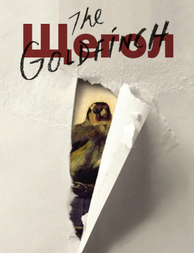

Щегол
АвторДонна Тартт
Языкрусский
Жанрыроман
Возрастные ограничения18+
Переплеттвердый
Цена750 р
Кто отдаст
Алина
08.12.2023
Долгое время пытался для себя понять, какими словами можно описать столь
прекрасную книгу, как "Щегол", но чувства, которые она вызывает, невозможно обличить в
слова. Это тяжелая книга о взрослении, о поиске себя и своего пути, о понимании человеческих
взаимоотношений, кого же можно назвать другом в столь ужасном и грязном мире, и как стоит
правильно поступить, когда ты совсем один, и помощи ждать не от кого. Это о внутренней боли,
которую пытаешься заглушить чем-то отвратительным, что мир изменится в красках, став из
болотного кислотным, но и это не становится выходом для главного героя, лишь попыткой
заглушить себя, собственные мысли, раскрасить внутренний мир, пока краски еще не высохли,
пока слой за слоем можно перекрыть черный. "Щегол" не для каждого. Не все смогут вынести
долгие размышления, глубокие чувства, справиться с ужасными поступками героев и понять их,
прочувствовать, выразить сочувствие, никак не негодование и омерзение. Те, кто считают эту
книгу пустышкой, не смогли даже букварь обуздать. "Щегол" невозможно порекомендовать, до
него нужно дойти собственным тяжелым путем и окунуться в чужой мир, узнавая историю
Толя
09.10.2024
Дочитала книгу. Теперь точно знаю, что сказать тем, кто "обливает
грязью" этот роман. Он "тончайший", филигранные мысли, невероятный мир переживаний героя.
Однозначно советую тем, кто умеет размышлять, чувствовать и имеет гибкий ум. Да, в какой
момент было слишком много " грязи". Никаких тебе цветочков, конфеток. Но мир не делится на
белое и чёрное. Нельзя мыслить категориями. В каждом человеке тесно переплетаются позитив и
негатив - это нормально! Чтобы вам не говорили!
Переживала вместе с героем. Некоторые абзацы и фразы перечитывала по несколько раз, на
столько проникалась моментами.
Получила удовольствие от прочтения. Донна Тартт не зря получила свою премию.
По стилю написания напомнила ( именно напомнила) Пастернака и Достоевского.
настя
18.01.2023
Бесполезно даже пытаться облечь свои ощущения в слова, "Щегол"-
бесподобный! Его можно растащить на цитаты и обсуждать бесконечно.
Тартт пишет густо, обволакивающе. Читаешь и проваливаешься в сюжет.
Вот Тео выбирается из обломком и ты карабкаешься с ним. Вот его душу скребёт тоска по маме и
ты летишь в пропасть отчаяния с ним на пару.
Это магия слов!
Так мастерки написана книга, так ярко выражены мысли!
Деталей много, но они не утежеляют, а напротив украшают сюжет.
Это и роман взросление. Тут интересно наблюдать за развитием персонажа, его окружением,
взлетами и падениями, невероятным погружением в его внутренний мир с глубокой рефлексией. И
не случись трагедии в музее, жизнь Тео могла бы сложиться иначе. От этой мысли невыносимо
грустно.
Книгу хотелось читать беспрерывно и в тоже время замедлиться, упиваться тягучим слогом и
мастерством автора, вбирая в себя каждое слово, изящность слога.
А когда дочитала, поймала себя на мысли, будто отобрали что-то родное, близкое.